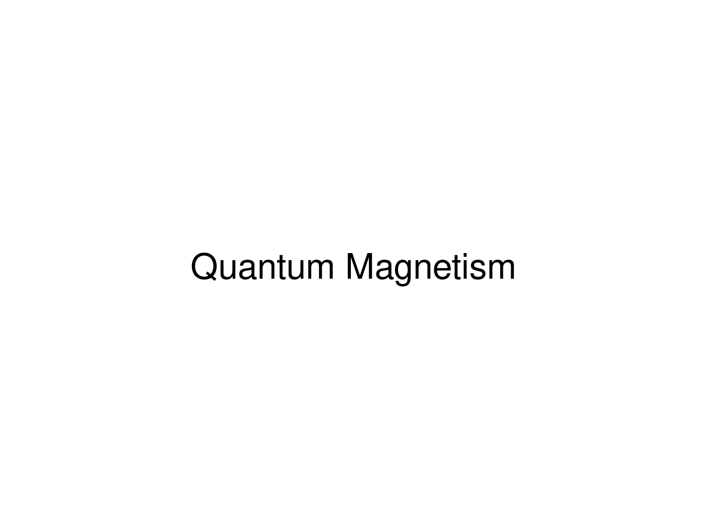

At SBQMI, I study itinerant magnets that do not develop conventional long-range magnetic order. Their spin fluctuations extend broadly in energy and wavevector, and the quantum correlations they carry are distributed over many degrees of freedom rather than condensed into an ordered state. Such correlations are difficult to characterize with standard probes: the inelastic neutron spectra are broad and diffuse, and are often attributed to disorder or short-range fluctuations without further analysis.
A central component of this program is the development of Quantum Fisher Information (QFI) as a practical tool for extracting entanglement information from neutron scattering structure factors. QFI provides a rigorous lower bound on multipartite entanglement and can be computed from experimental data without model assumptions about the ground state. This connects neutron measurements directly to quantum information science and provides an experiment-based criterion for whether a material's quantum correlations are strong enough to be useful for sensing or computing. The program combines single-crystal synthesis and bulk characterization with inelastic neutron scattering at SNS and HFIR over wide energy and momentum ranges, followed by QFI extraction through frequency sum rules and comparison with theoretical entanglement measures. The guiding questions are which itinerant magnets host the strongest multipartite entanglement, how the entanglement content evolves with temperature, field, and chemical tuning, and which material characteristics, such as bandwidth, frustration, and spin-orbit coupling, sustain high QFI.
The QFI density FQ is related to the dynamic spin structure factor S(q, ω) through an integral over frequency at fixed wavevector. This sum rule makes QFI directly accessible from inelastic neutron scattering data without model input. The resulting certification is sharp: whenever FQ/N exceeds k, at least k+1 spins in the system are genuinely entangled.
In practice, extracting QFI requires wide energy-transfer coverage and careful absolute normalization, both achievable on modern time-of-flight spectrometers at SNS. I am developing a reliable protocol for QFI extraction across different classes of quantum magnets, so that the resulting entanglement benchmarks can identify which materials merit further pursuit for quantum information applications.
Not every itinerant magnet hosts strong quantum correlations. The relevant cases are those in which kinetic energy, exchange interactions, and geometric frustration combine to produce a strongly correlated paramagnet rather than a conventional ordered phase or a trivial paramagnet. I grow single crystals of candidate materials at SBQMI and characterize their bulk magnetic and thermodynamic properties with PPMS and MPMS.
Measurements of susceptibility, specific heat, and resistivity as functions of temperature and field provide a first map of each phase diagram and identify anomalous correlations that warrant neutron scattering study. This synthesis-driven screening concentrates the available neutron beam time on the most promising candidates.
The connection to quantum technology is direct. QFI is the same quantity that determines the sensitivity of a quantum sensor operating at the Heisenberg limit, the fundamental quantum bound on measurement precision. A material with high multipartite entanglement in its spin fluctuations could in principle serve as a quantum-enhanced medium for detecting weak magnetic fields, in a regime where classical sensors are limited by shot noise. Identifying magnets that reach high QFI at accessible temperatures and fields is therefore a concrete step toward quantum materials of technological value.
For a complete list of publications and presentations, see my Google Scholar profile.